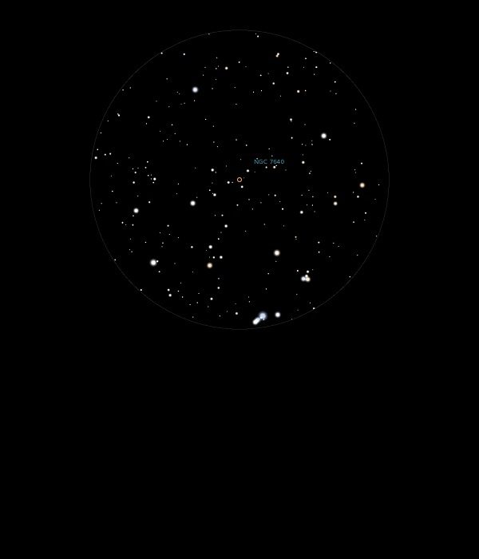

NGC 7640
Spiral Galaxy in Andromeda
NGC 7640
Mag 11.3
10/12/14
A very faint elongation marks this Galaxy which took some
finding!
Sits in a nice rich starfield
It's location is aided by the neat triangle asterism of three
10th Mag stars which sit in the same FOV